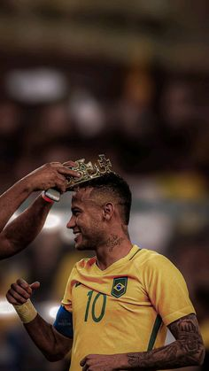

BRASIL HEXA CAMPEÃO MUNDIAL
Por: Marcelo Bechler
Após 5 fracassos na copa do mundo,a seleção de Carlo Ancelotti junto de Neymar Jr. conseguem trazer a sexta estrela pro país.
Será que Neymar é realmente é um idolo do país?

Por: Marcelo Bechler
Após 5 fracassos na copa do mundo,a seleção de Carlo Ancelotti junto de Neymar Jr. conseguem trazer a sexta estrela pro país.

Por: Marcelo Queiroz
Neymar é flagado em boate comemorando o titulo merecido com seus amigos vini jr, marquinhos, endrick e lucas paqueta. essa ida a boate pode ser um problema?